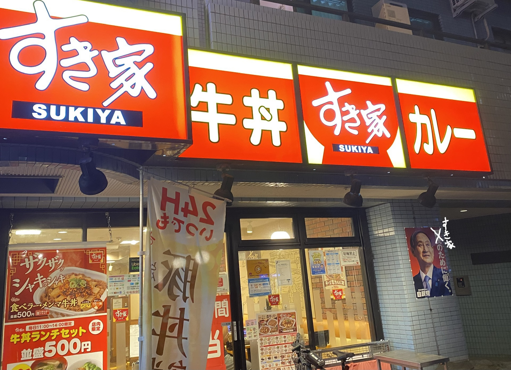

[課題」看板・サインの観察

10/9 横浜市周边 撮影者：自分
家の近くの菓子屋
店の見た目は古いけど
看板に書かれている（創業明治33年）は味に最も有力な証明

10/9 横浜市周边 撮影者：自分
普通なすき家ではなく、地域最強と言える！！！
店のスポークスマン、ブランド大使、元首相：菅義偉

10/9 横浜市周边 撮影者：自分
伝統的なラーメン店の装飾より、カフェのようです
周りにの壁はカーテンウォークで、それをうまく利用して、壁を看板にしました。
左側の看板は赤色でデザインされていて、昼でも夜でも目を引きます。